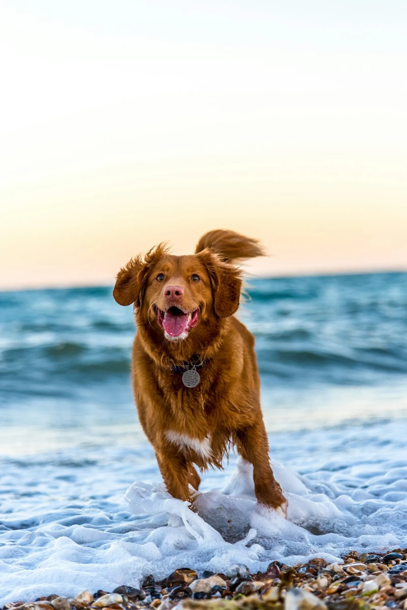
Bath & Tidy
A thorough bath, brush-out and tidy-up so your dog comes home clean, soft and smelling lovely.
Birmingham, Alabama · Since 2012
Baths Barks & Bubbles Pet Spa is where Birmingham’s dogs come to be bathed, groomed and fussed over — gently, patiently, and by people who know them by name.
Call: (205) 214-3782 · Facebook: Baths Barks & Bubbles Pet Spa at The Ridge
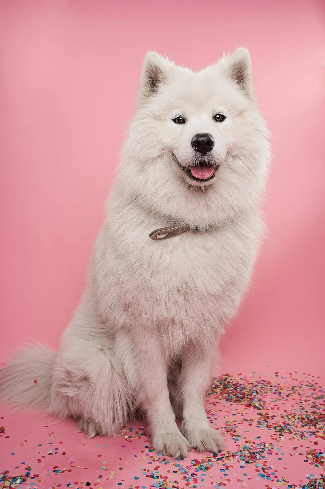
reviews, 4.5 stars (Birdeye)
of Birmingham’s 3 best groomers (ThreeBestRated)
Kimberly’s grooming experience
walk-ins and same-day appointments
Services
Baths, cuts, coat care and health-maintenance steps are all included in the salon’s packages — tailored to your dog’s coat, age and temperament.

A thorough bath, brush-out and tidy-up so your dog comes home clean, soft and smelling lovely.
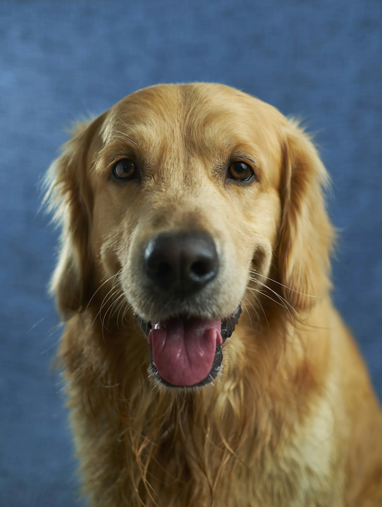
Bath, cut and finish, styled for your dog’s breed and coat — never rushed, always gentle.
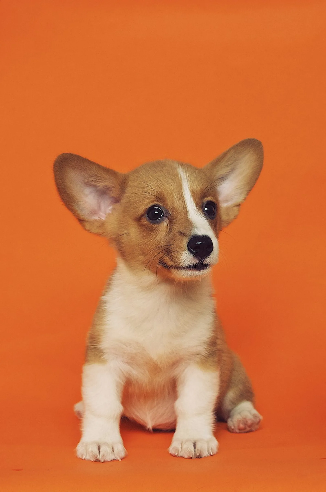
Slow, kind first visits that build a puppy’s confidence, so grooming becomes something they enjoy.
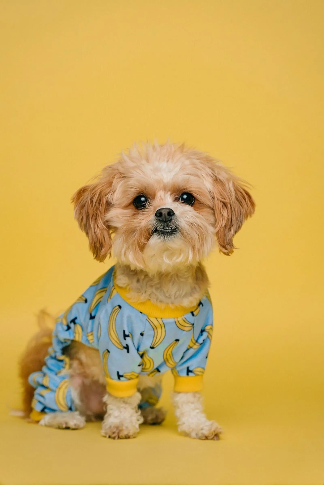
One-to-one appointments for dogs who need extra attention, patience or a quieter salon.
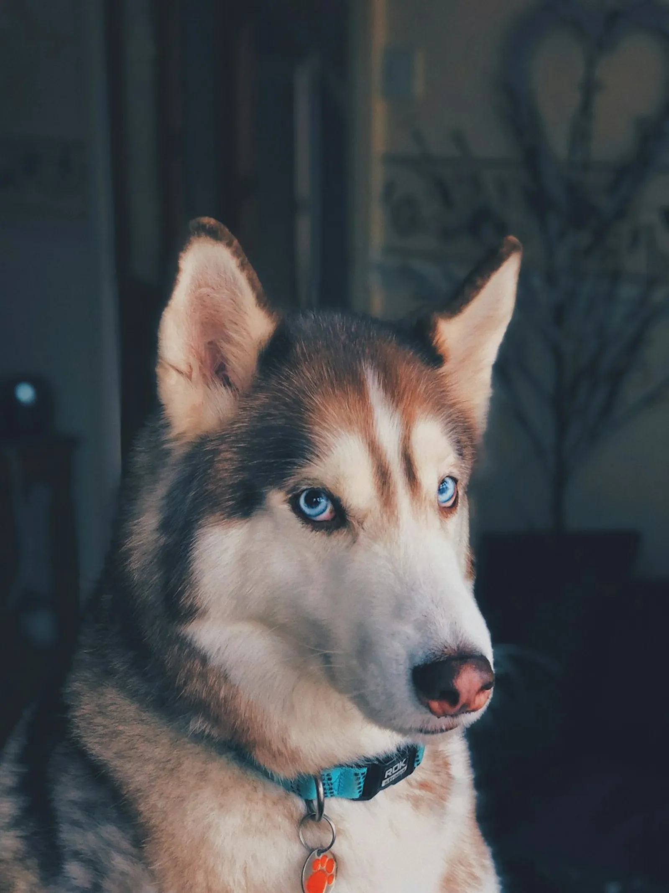
Deshedding and coat maintenance that leaves coats healthier — and your sofa a little less furry.
Health-maintenance steps are included in every package, with care for sensitive and itchy skin.
Prices on request — grooming prices depend on your dog’s size, coat and the time the groom takes. Call the salon for a quote.
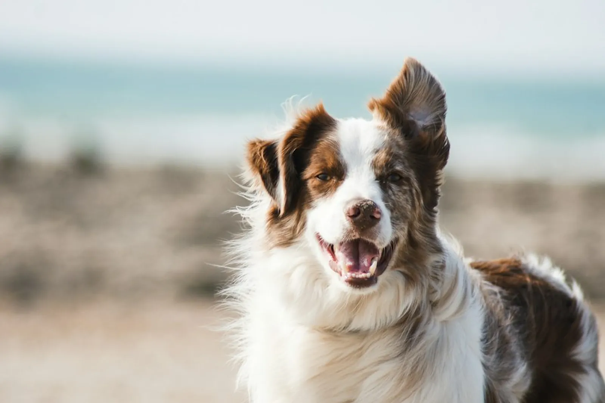
Meet Ms. Kim
Baths Barks & Bubbles Pet Spa is owned and operated by Kimberly D. — Ms. Kim to her clients — who has spent 19 years grooming and 21 years working with animals. Her team works closely with puppies, including setting up private sessions for dogs who need a little extra care.
Clients say their dogs are excited to return, that Ms. Kim and her staff take their time on every visit, and that nervous dogs leave calm and beautiful. Some families have been coming for years — one reviewer has brought their dog for over six years.
Meet the Team — Book a VisitHow a visit works
Call (205) 214-3782 or message the salon on Facebook. Same-day appointments are often possible.
Bring your dog in and tell the team about their coat, skin and temperament — and anything that worries them.
Bath, groom and health-maintenance steps, done gently and at your dog’s pace, with private sessions when needed.
Collect a clean, beautiful, happy dog — and book the next visit while you are there.
Why pet parents choose us
Dogs who used to dread grooming now arrive excited — the team’s patience and kindness are mentioned again and again.
Families return for 3, 6 and more years, and say they will forever support the salon.
Dogs look beautiful after every visit, and owners note less itchy skin after a bath and good deshedding results.
Walk-ins taken in, same-day appointments completed, and appointment days that work around the owner.
Happy pups
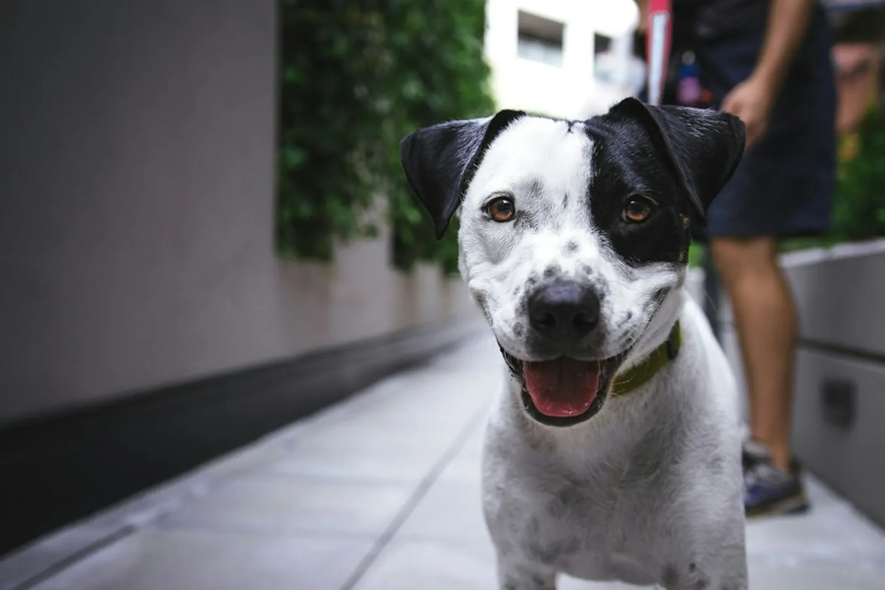
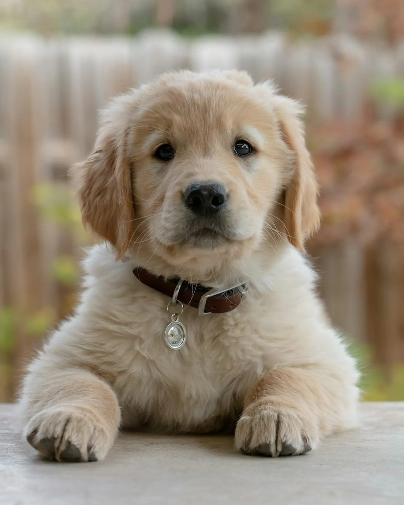
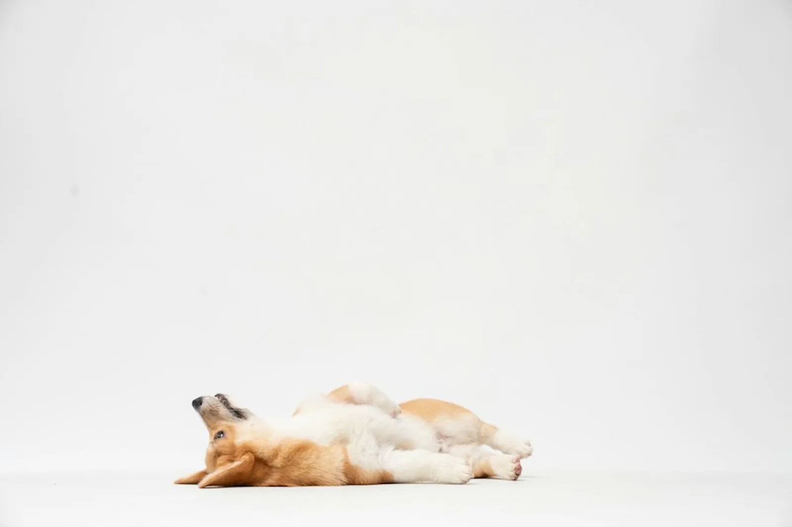
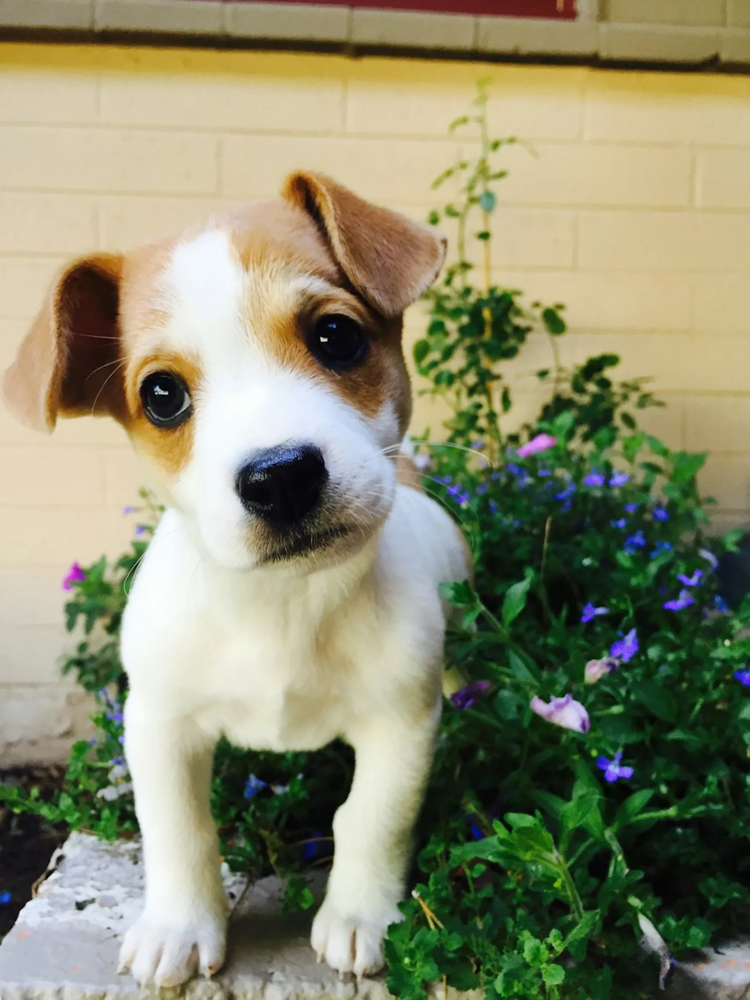
Visit us
| Tuesday – Friday | 7:00 am – 6:00 pm |
| Saturday | 7:00 am – 3:00 pm |
| Sunday & Monday | Closed |
Hours as listed by ThreeBestRated and the salon’s Places listing. Older directory listings show a previous address and hours; the Rocky Ridge Road address below is the current one.
Address: 2488 Rocky Ridge Road, Building 2, Vestavia Hills, Birmingham, AL 35243
Phone: (205) 214-3782
Facebook: Baths Barks & Bubbles Pet Spa at The Ridge (3,260 followers)
Yes — the salon specialises in puppies, including private sessions to build a young dog’s confidence gently.
Reviewers report same-day appointments being completed and walk-ins being taken in. Call (205) 214-3782 to check availability for today.
Tell the team when you book. Private sessions are available for dogs who need extra attention, and reviewers say nervous dogs leave calm and happy.
Prices depend on your dog’s size, coat and the time the groom takes. Call the salon for a quote — prices are on request.